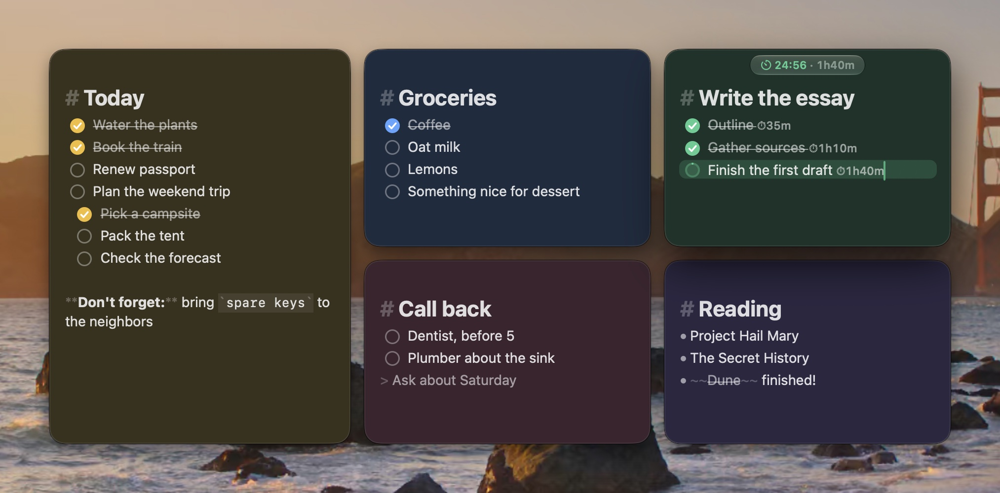
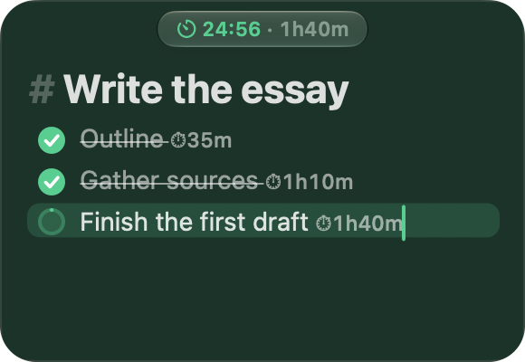
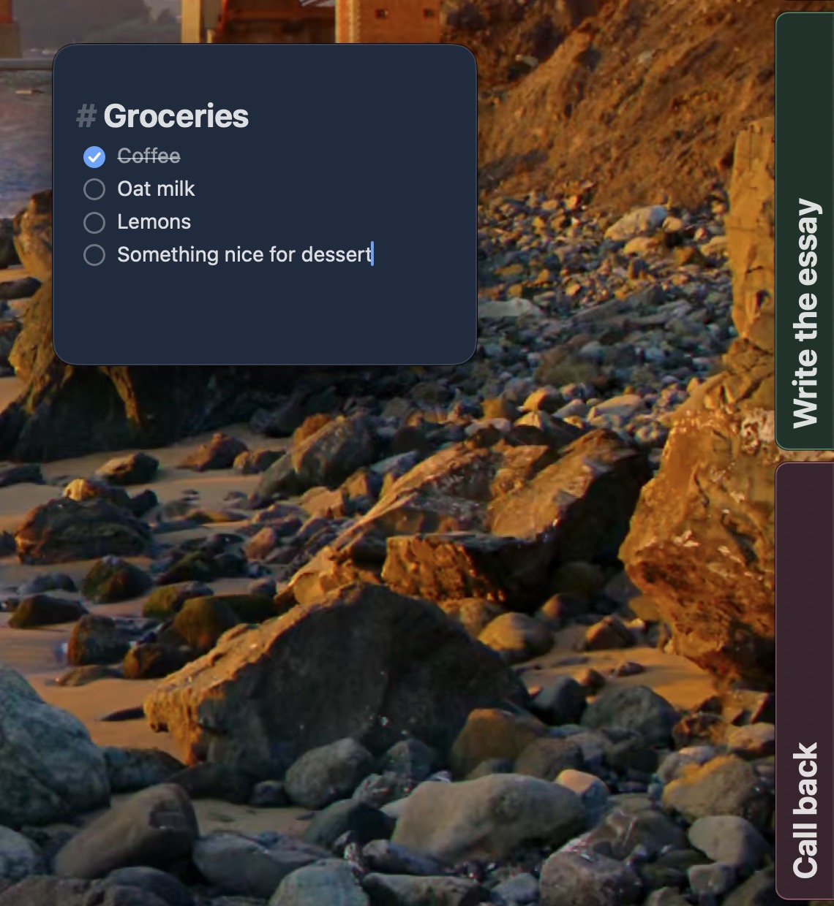
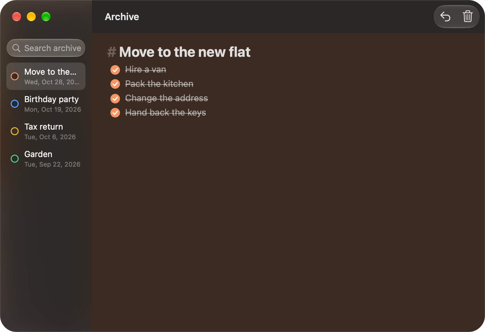

Quick scratchpads for todos and short-lived reminders. A handful of colorful notes floating on your desktop, saved as you type, with checklists and focus timers built in.

Stackies has no main window and no save button. Notes reopen exactly as you left them: text, position, size and color.
Headings, bold, italic, strikethrough, inline code, links, lists and quotes are styled live. Write - [ ] and you have a checklist.
Press ⌘T on an item to start a focus timer. The countdown shows in the note and the menu bar, and focus time is tracked per item.
Slide a note to the screen edge as a small tab (⌘J), file finished notes in a searchable archive, or bring back a closed one with ⇧⌘T.
Seven note colors with light and dark variants. Pin a note to keep it above your other windows, and it plays nicely with Stage Manager.
Everything lives in one JSON file on your Mac. No accounts, no cloud, no sync service to trust.
Real windows, with made-up notes.



There's no download yet, so build it from source.
git clone https://github.com/kylepollina/stackies.git cd stackies ./scripts/build.sh --install
Requires macOS 14 (Sonoma) or later, and Xcode or the Swift toolchain. MIT licensed.